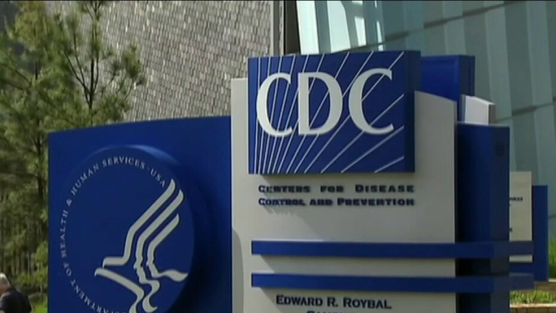

CDC to release revised guidance reducing COVID-19 quarantine time from 14 days to 7-10
CDC meeting to vote on who gets coronavirus vaccine first

00:00
00:0002:30GO LIVE
Embed
SpeedNormal
Autoplay
The Centers for Disease Control and Prevention is expected to release revised guidance on quarantine time for those who may have been exposed to the novel coronavirus from 14 days to 7 days, for those who have received a negative test, and 10 days for those who have not been tested, Fox News has learned.
Fox News obtained an internal CDC document on Tuesday which outlined the proposed changes.A source told Fox News that the changes have been discussed with and approved by the White House Coronavirus Task Force.
DR.SCOTT ATLAS RESIGNS AS SPECIAL ADVISER TO TRUMP ON CORONAVIRUS
The CDC is expected to release the revised guidance on Wednesday, a source told Fox News.
'Quarantine is used to keep someone who might have been exposed to COVID-19 away from others.Quarantine helps prevent spread of disease that can occur before a person knows they have the virus,' the document states.'CDC and other scientists have explored changing the current recommendation to quarantine for 14 days.'
'Reducing the length of quarantine may increase compliance by reducing economic hardship,' the document continues.'In addition, the reduction in time will lessen stress on the public health system, especially when new infections are rapidly rising.'
The document states that 'based on local resources, quarantine can end on Day 7 after receiving a negative test result' or on 'Day 10 without testing.'
'After stopping quarantine, you should: watch for symptoms until 14 days after exposure; if you have symptoms, immediately self-isolate and contact your local public health authority or healthcare provider; wear a mask, stay at least 6 feet from others, wash your hands, avoid crowds, and take other steps to prevent the spread of COVID-19,' the document states.
The document adds, however, that the CDC 'continues to recommend quarantine for 14 days to more completely reduce the risk of spread of COVID-19.'
'CDC recognizes that any quarantine shorter than 14 days balances reduced burden against a small possibility of spreading the virus,' the document states.'These recommendations are based on what we know now.'
The document added that: 'CDC will continue to evaluate new information and update recommendations as needed.'
COVID-19 VACCINES WILL BE READY WITHIN 24 HOURS OF FDA APPROVAL, AZAR SAYS
A senior administration official told Fox News that the revised guidance is 'long overdue,' and 'something that should have happened sooner.'
The official told Fox News that the CDC's revised recommendations were guided by extensive modeling studies by CDC scientists, as well as scientists from outside the agency.The official said that the risk of COVID transmission remains the 'lowest with 14 days of quarantine,' but that the new options introduce an estimated 1% 'residual risk' if quarantine is shorted to 10 days, and 5% residual risk of quarantine is reduced to 7 days, if you also add a test.
The official said that the 'small amount of increased risk' with these new options 'needs to be weighed against the benefits of reduced economic hardship, reduced stress on the public health system, and better compliance with quarantine and contact tracing that could improve overall control of new infections.'
The revised guidance, expected to be announced on Wednesday, comes as the Trump administration said deliveries of a COVID-19 vaccine will begin as early as this week, and would be available first for front-line workers, medical personnel and senior citizens.
Next week, regulators at the Food and Drug Administration are expected to review Pfizer's request for an emergency use authorization for its vaccine developed with BioNTech.
The latest trial data for Pfizer and BioNTech's vaccine, unveiled earlier this month, showed it was 90% effective.
In addition, Moderna said its vaccine is 94.5% effective in preventing COVID-19.AstraZeneca also reported preliminary results that showed its vaccine efficacy ranged from 62% to 90%, depending on the dosage amount given to participants.
According to Health and Human Services Secretary Alex Azar, the vaccines will be 'shipped' within 24 hours of FDA approval and then it would be up to 'nursing homes, hospitals, and pharmacies to get that dispensed.'
'It really could be within days of FDA approval we’ll start seeing vaccines in people’s arms which is frankly incredible,' Azar said Monday.
The United States has reported more than 13.5 million cases of COVID-19 since the onset of the pandemic, and more than 267,000 deaths.
Posted On: 2020-12-01T00:00:00
Posted By: Brooke Singman
Content Date: 2020-12-01
Download Date: 2021-04-21
Document ID: L0C04ASVL